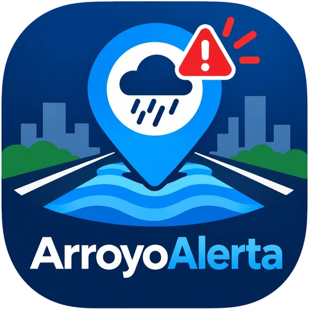

Barranquilla y el Atlántico
Entérate de que el arroyo crece antes de salir de casa
Mapa en vivo de los arroyos y alertas antes de que crezcan, directo en tu celular
Nivel alto
Arroyo de la 21
Reportado hace 4 min
El problema
Cada aguacero fuerte en Barranquilla convierte las calles en una apuesta: nadie sabe en tiempo real cuáles se pueden cruzar.
En cifras
134
muertes por arroyos en casi 50 años
+50
arroyos urbanos; 15 son los más peligrosos
6
de los más peligrosos siguen sin canalizar
$1,2 billones
invertidos desde 2008 para canalizar 70 km
2,29 M
personas en el área metropolitana
Fuente: El Heraldo, “Arroyos: más de 70 km lineales han sido canalizados en Barranquilla”
En el día a día
El impacto va más allá de las obras
Accidentes
por desconocer el estado de las vías
Daños a vehículos
por cruzar arroyos activos
Entregas fallidas
y pérdidas para domicilios y logística
Cómo funciona
01
Monitoreamos
Reportes ciudadanos validados, sensores de nivel y datos de lluvia
02
Te avisamos
Recibes la alerta antes del pico del arroyo, por la app o WhatsApp
03
Tomas otra ruta
Te sugerimos un camino alterno para que llegues seguro
El equipo
Proyecto universitario · Corporación Universidad de la Costa (CUC)
Santiago Navarro
Analista
Pablo Valencia
Diseñador
Shardy Sarmiento
Comunicador

Recibe las alertas antes de salir
Únete al canal de WhatsApp y te avisamos cuando un arroyo esté por crecer cerca de ti.